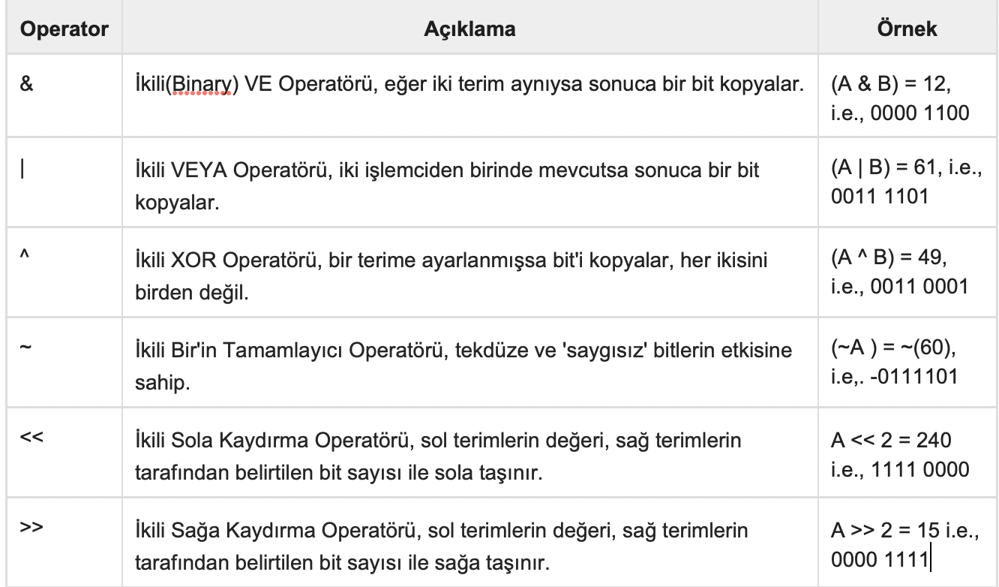

C Öğreticisi 7 (Operatörler)
Bu yazılar https://www.tutorialspoint.com/cprogramming/ adresindeki yazı dizilerinin çevirileridir.
Operatörler, derleyiciye karışık matematiksel ve mantıksal işlemleri gerçekleştirmesini söyleyen sembollerdir. C dili gömülü operatörleriyle zengin bir dildir ve şu tipteki operatörleri sağlar -
Aritmetik Operatörler
Karşılaştırma Operatörleri
Mantıksal Operatörler
Bitler Üzerinde İşlem Yapan Operatörler
Atama Operatörleri
Diğer Operatörler
Bu bölümde, her operatörün çalışma şeklini inceleyeceğiz.
Aritmetik Operatörler
Aşağıdaki tablo C dili tarafından desteklenen tüm aritmetik operatörleri gösterir.
A değişkeni 10, B değişkeni 20 değerini tutarsa -
Karşılaştırma Operatörleri
Aşağıdaki tablo C dili tarafından desteklenen tüm karşıalştırma operatörlerini gösterir. A değişkeni 10, B değişkeni 20 değerini tutarsa -
Mantıksal Operatörler
Aşağıdaki tablo C dili tarafından desteklenen tüm mantıksal operatörleri gösterir. A değişkeni 1, B değişkeni de 0 değerini tutarsa -
Bitler Üzerinde İşlem Yapan Operatörler
Bitsel operatör bitlerde çalışır ve bit bit işlem gerçekleştirir. &, | Ve ^ için doğruluk tabloları aşağıdaki gibidir -
İkili sistemde A=60 ve B=13 olsun, şöyle gösterilirler:
A = 0011 1100
B = 0000 1101
— — — — — — — — -
A&B = 0000 1100
A|B = 0011 1101
A^B = 0011 0001
~A = 1100 0011
Aşağıdaki tablo C dili tarafından desteklenen tüm bitsel operatörleri gösterir. A değişkeni 60 ve B değişkeni 13’ü tutarsa -
Atama Operatörleri
Aşağıdaki tablo C dili tarafından desteklenen tüm atama operatörlerini gösterir. -
Diğer Operatörler ↦ sizeof & ternary
Yukarıda tartışılan operatörlerin yanı sıra, sizeof ve? : C Dili tarafından desteklenir.
C’de Operatör Önceliği
Operatör önceliği, bir ifadedeki terimlerin gruplandırılmasını belirler ve bir ifadenin nasıl değerlendirileceğine karar verir. Bazı operatörler diğerlerinden daha yüksek önceliğe sahiptir; örneğin, çarpma operatörü, toplama operatöründen daha yüksek önceliğe sahiptir.
Örneğin, x=7+3*2; burada, x’e 13 atanır, 20 değil. Çünkü * operatörü +’dan yüksek önceliğe sahiptir. Bu yüzden önce 3*2 çarpılır sonra 7 eklenir.
Burada, en yüksek önceliğe sahip operatörler tablonun en üstünde, en düşük seviyeli olanlar ise en altta belirtilmiştir. Bir ifade içerisinde önce yüksek öncelikli operatörler değerlendirilecektir.
https://www.tutorialspoint.com/cprogramming/c_operators.htm